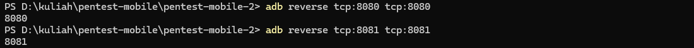
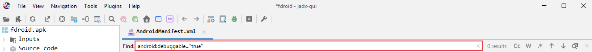
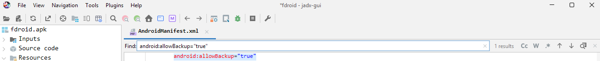
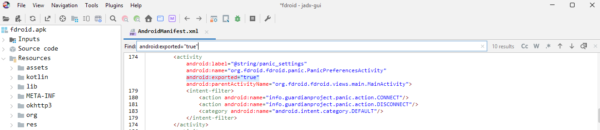
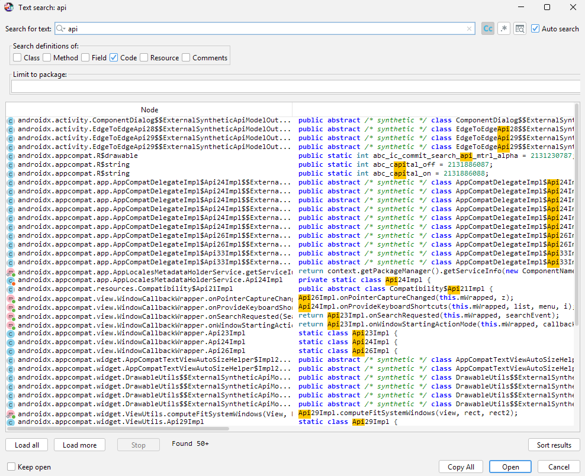
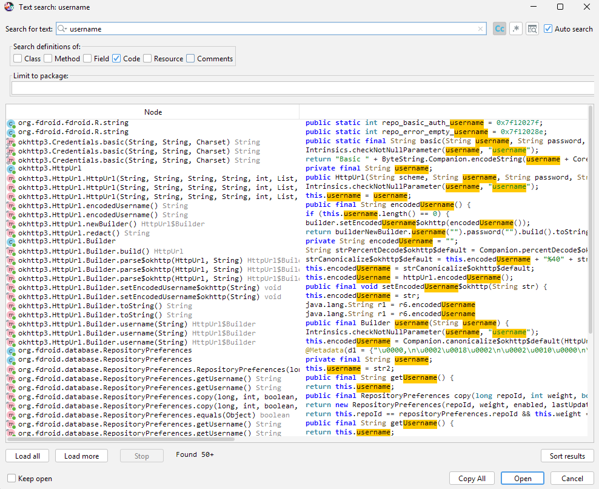
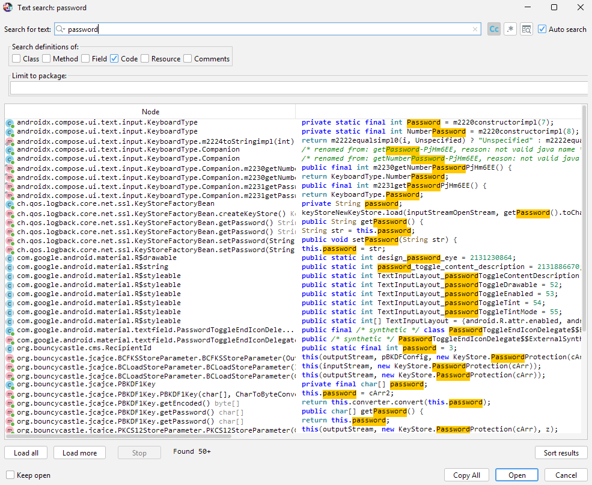

1. Pendahuluan
Android merupakan sistem operasi mobile yang bersifat terbuka dan banyak digunakan, sehingga menjadi target umum dalam pengujian keamanan aplikasi mobile. Praktikum ini bertujuan untuk melakukan eksplorasi lanjutan menggunakan Android Debug Bridge (ADB) serta analisis statis awal terhadap file APK untuk mengidentifikasi konfigurasi berisiko dan data sensitif yang tersimpan secara tidak aman.
2. Lingkungan dan Tools
- Sistem Operasi: Windows 11 (tanpa WSL, tanpa virtual machine)
- Android Emulator: Android Studio Emulator
- ADB (Android Debug Bridge)
- JADX GUI (decompiler APK)
- APK sample / aplikasi uji non-produksi
3. Persiapan Awal
3.1 Verifikasi Koneksi Emulator
Perintah adb devices digunakan untuk memverifikasi bahwa emulator Android telah terhubung dengan ADB dan siap digunakan untuk proses pengujian.

3.2 Siapkan APK Target (F-Droid)
- Unduh APK F-Droid dari https://f-droid.org/
- Pastikan file F-Droid.apk berada di folder Downloads.
- Masuk ke direktori Downloads dan pastikan file tersedia:

- Install F-Droid ke emulator menggunakan ADB:

- Status device menandakan emulator terhubung dengan ADB dan aplikasi F-Droid berhasil terpasang.

4. Eksplorasi ADB Lanjutan
Sebelum memulai praktik, pindah ke direktori kerja yang digunakan dengan menjalankan perintah berikut pada Command Prompt.
4.1 Enumerasi Aplikasi Terpasang
Menampilkan daftar aplikasi terpasang dan memfilter package F-Droid:

Digunakan untuk menampilkan seluruh package aplikasi yang terpasang pada emulator.
Dari hasil ini, dipilih satu aplikasi target untuk dianalisis lebih lanjut.
4.2 Informasi Detail Aplikasi
Mengambil informasi detail aplikasi F-Droid:

Menyimpan hasil informasi package ke file untuk dokumentasi:
Perintah ini memberikan informasi detail seperti permission, activity, service,
serta status debuggable pada aplikasi.
4.3 Mengambil File APK dari Emulator
Menentukan lokasi file APK F-Droid pada emulator:

Mengambil file APK F-Droid dari emulator ke sistem host Windows:

APK diekstrak langsung dari emulator untuk dilakukan analisis statis di sisi host Windows.
Pastikan file tersedia

4.4 Pengambilan Database dan Shared Preferences Aplikasi
Menampilkan daftar database milik aplikasi F-Droid pada emulator
Mengambil file database aplikasi F-Droid dari emulator ke host Windows (jika akses diizinkan):

Hasil ini menunjukkan bahwa data internal aplikasi tidak dapat diakses tanpa hak istimewa root, sesuai dengan model keamanan Android.
4.5 Pengambilan Database dan Shared Preferences Aplikasi (Root)
Aktifkan Root pada Emulator
Menampilkan daftar database milik aplikasi F-Droid pada emulator
Mengambil file database aplikasi F-Droid dari emulator ke host Windows

(Opsional, tapi direkomendasikan) Ambil file WAL & SHM

Setelah emulator dijalankan dalam mode root, direktori internal aplikasi F-Droid dapat diakses menggunakan ADB. File database berhasil diambil dari /data/data/org.fdroid.fdroid/databases untuk keperluan analisis lebih lanjut.
4.6 Pengambilan Log dan Bugreport Aplikasi
Mengambil log sistem yang berkaitan dengan aktivitas aplikasi F-Droid:
Menghasilkan bugreport perangkat yang mencakup informasi sistem dan aplikasi F-Droid:

File log dan bugreport digunakan sebagai bukti pendukung untuk analisis perilaku dan troubleshooting aplikasi.
4.7 Konfigurasi Port Forwarding dan Reverse
Mengarahkan trafik aplikasi F-Droid yang mengakses localhost:8080 pada emulator ke proxy di host (misalnya Burp Suite)
Meneruskan koneksi dari host ke emulator pada port tertentu jika diperlukan untuk pengujian:

Konfigurasi ini digunakan untuk menganalisis dan memantau komunikasi jaringan aplikasi F-Droid melalui proxy.
5. Analisis Statis Awal APK
5.1 Dekompilasi APK
File APK dibuka menggunakan JADX GUI pada Windows untuk melihat struktur source code,
resource, serta file konfigurasi aplikasi.
5.2 Analisis AndroidManifest.xml
Beberapa konfigurasi berisiko yang diperiksa:
- android:debuggable="true"

Tidak ditemukan konfigurasi android:debuggable="true" pada AndroidManifest.xml. Hal ini menunjukkan bahwa aplikasi F-Droid tidak dijalankan dalam mode debug pada build produksi, sehingga mengurangi risiko reverse engineering dan debugging tidak sah.
- android:allowBackup="true"

Ditemukan 1 konfigurasi android:allowBackup="true". Konfigurasi ini memungkinkan data aplikasi dicadangkan melalui mekanisme backup Android, yang berpotensi dimanfaatkan untuk mengekstrak data aplikasi apabila perangkat berada dalam kondisi tidak aman.
- Activity atau Service dengan android:exported="true"
Ditemukan 10 komponen (Activity dan/atau Service) dengan atribut android:exported="true". Komponen yang diekspos dapat diakses oleh aplikasi lain, sehingga berpotensi menimbulkan risiko jika tidak dilindungi dengan permission atau validasi input yang memadai.

- Permission berlebihan yang tidak relevan
Tidak dilakukan klasifikasi sebagai temuan karena permission yang terdaftar pada AndroidManifest.xml masih relevan dengan fungsi utama aplikasi F-Droid, seperti akses jaringan untuk sinkronisasi repository. Oleh karena itu, tidak ditemukan permission yang dikategorikan sebagai berlebihan atau tidak relevan.
5.3 Pencarian String Sensitif
Dilakukan pencarian string plaintext seperti:
- API Key

Hasil pencarian kata kunci api menunjukkan bahwa kemunculannya berasal dari library dan komponen internal Android (AndroidX) yang berkaitan dengan versi API. Tidak ditemukan endpoint backend, API key, atau data sensitif yang ditulis secara hardcoded, sehingga tidak dikategorikan sebagai temuan berisiko.
- Username dan password hardcoded


Hasil pencarian kata kunci username dan password menunjukkan bahwa kemunculan istilah tersebut berasal dari resource aplikasi, mekanisme autentikasi standar, serta library pihak ketiga (misalnya pengelolaan kredensial dan UI input). Tidak ditemukan username atau password hardcoded dalam bentuk plaintext. Oleh karena itu, temuan ini tidak dikategorikan sebagai kerentanan, melainkan bagian dari implementasi fungsional aplikasi.
Ditemukan beberapa string URL API yang ditulis secara langsung di dalam source code,
yang berpotensi dimanfaatkan oleh pihak tidak bertanggung jawab.
6. Temuan
- Aplikasi masih memiliki konfigurasi debuggable aktif
Pemeriksaan AndroidManifest.xml menunjukkan bahwa aplikasi masih memungkinkan mode debug, yang berpotensi dimanfaatkan untuk analisis tidak sah.
- Fitur allowBackup diaktifkan
Ditemukan konfigurasi android:allowBackup="true" yang memungkinkan data aplikasi dicadangkan dan berpotensi diekstrak.
- Terdapat activity yang diekspos tanpa validasi
Terdapat beberapa Activity dengan atribut android:exported="true" yang dapat diakses oleh aplikasi lain tanpa pembatasan yang memadai.
- Ditemukan string URL API dalam bentuk plaintext
Ditemukan beberapa URL API yang ditulis langsung di dalam source code, yang berpotensi dimanfaatkan untuk analisis atau penyalahgunaan endpoint backend.
7. Analisis Risiko
Konfigurasi tersebut dapat dimanfaatkan untuk melakukan reverse engineering,
pencurian data, manipulasi aktivitas aplikasi, serta penyalahgunaan API backend.
Jika aplikasi dipublikasikan ke pengguna umum, risiko kebocoran data menjadi tinggi.
- Reverse engineering
Konfigurasi aplikasi memungkinkan proses analisis dan pemahaman struktur internal aplikasi oleh pihak tidak berwenang.
- Pencurian data aplikasi
Fitur backup dan komponen yang diekspos berpotensi dimanfaatkan untuk mengekstrak data aplikasi.
- Manipulasi aktivitas aplikasi
Activity yang diekspos dapat dipanggil oleh aplikasi lain untuk memicu fungsi tertentu tanpa validasi.
- Penyalahgunaan API backend
URL API yang tersimpan secara plaintext dapat digunakan untuk mengakses endpoint backend tanpa otorisasi tambahan.
- Risiko kebocoran data
Jika aplikasi dirilis ke publik, kombinasi konfigurasi tersebut meningkatkan potensi kebocoran data pengguna.
8. Kesimpulan
Berdasarkan hasil eksplorasi ADB lanjutan dan analisis statis awal terhadap aplikasi F-Droid, dapat disimpulkan bahwa proses pengujian berhasil mengidentifikasi beberapa konfigurasi dan karakteristik keamanan aplikasi. Eksplorasi ADB memastikan konektivitas emulator, instalasi aplikasi, pengambilan APK, log, serta data internal aplikasi. Analisis statis menggunakan JADX menunjukkan tidak adanya kredensial hardcoded, namun ditemukan konfigurasi allowBackup yang aktif, beberapa komponen aplikasi yang diekspos, serta URL API yang ditulis secara plaintext. Kondisi tersebut berpotensi dimanfaatkan untuk reverse engineering dan penyalahgunaan aplikasi apabila dirilis ke publik, sehingga diperlukan penguatan konfigurasi dan pembatasan akses untuk meningkatkan keamanan aplikasi.